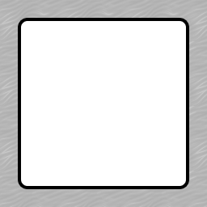
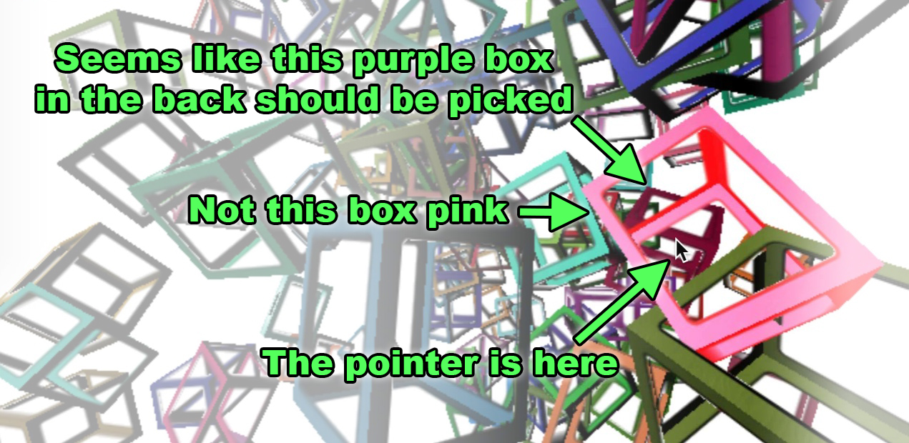

拾取指的是确定用户点击或触摸的对象的过程。有很多方法可以实现拾取，每种方法都有其权衡。我们来看看最常用的两种。
最常见的拾取方法可能是通过射线投射实现的，这意味着从鼠标通过场景的视锥投射一条射线，并计算该射线与哪些对象相交。从概念上讲，这非常简单。
首先，我们会获取鼠标的位置。我们会通过应用相机的投影和方向将其转换为世界空间。我们会计算从相机视锥的近平面到远平面的射线。然后，对于场景中的每个对象的每个三角形，我们会检查该射线是否与该三角形相交。如果你的场景有1000个对象，并且每个对象有1000个三角形，那么就需要检查100万个三角形。
一些优化方法包括首先检查射线是否与对象的包围球或包围盒相交，即包含整个对象的球或盒子。如果射线不与其中一个相交，那么我们就不必检查该对象的三角形。
THREE.js 提供了一个 RayCaster 类，它正是做这个用的。
让我们创建一个包含100个物体的场景，并尝试选择它们。我们将从关于响应式页面的文章中的一个示例开始
进行一些更改
我们将把相机设为另一个物体的子物体，这样我们旋转那另一个物体时，相机就会像自拍杆一样在场景中移动。
*const fov = 60;
const aspect = 2; // the canvas default
const near = 0.1;
*const far = 200;
const camera = new THREE.PerspectiveCamera(fov, aspect, near, far);
*camera.position.z = 30;
const scene = new THREE.Scene();
+scene.background = new THREE.Color('white');
+// put the camera on a pole (parent it to an object)
+// so we can spin the pole to move the camera around the scene
+const cameraPole = new THREE.Object3D();
+scene.add(cameraPole);
+cameraPole.add(camera);
在render函数中，我们将旋转相机杆。
cameraPole.rotation.y = time * .1;
同时，让我们把光源放在相机上，这样光源会随其移动。
-scene.add(light); +camera.add(light);
让我们生成100个颜色随机、位置、方向和缩放都随机的立方体。
const boxWidth = 1;
const boxHeight = 1;
const boxDepth = 1;
const geometry = new THREE.BoxGeometry(boxWidth, boxHeight, boxDepth);
function rand(min, max) {
if (max === undefined) {
max = min;
min = 0;
}
return min + (max - min) * Math.random();
}
function randomColor() {
return `hsl(${rand(360) | 0}, ${rand(50, 100) | 0}%, 50%)`;
}
const numObjects = 100;
for (let i = 0; i < numObjects; ++i) {
const material = new THREE.MeshPhongMaterial({
color: randomColor(),
});
const cube = new THREE.Mesh(geometry, material);
scene.add(cube);
cube.position.set(rand(-20, 20), rand(-20, 20), rand(-20, 20));
cube.rotation.set(rand(Math.PI), rand(Math.PI), 0);
cube.scale.set(rand(3, 6), rand(3, 6), rand(3, 6));
}
最后，让我们进行选择。
让我们创建一个简单的类来管理拾取
class PickHelper {
constructor() {
this.raycaster = new THREE.Raycaster();
this.pickedObject = null;
this.pickedObjectSavedColor = 0;
}
pick(normalizedPosition, scene, camera, time) {
// restore the color if there is a picked object
if (this.pickedObject) {
this.pickedObject.material.emissive.setHex(this.pickedObjectSavedColor);
this.pickedObject = undefined;
}
// cast a ray through the frustum
this.raycaster.setFromCamera(normalizedPosition, camera);
// get the list of objects the ray intersected
const intersectedObjects = this.raycaster.intersectObjects(scene.children);
if (intersectedObjects.length) {
// pick the first object. It's the closest one
this.pickedObject = intersectedObjects[0].object;
// save its color
this.pickedObjectSavedColor = this.pickedObject.material.emissive.getHex();
// set its emissive color to flashing red/yellow
this.pickedObject.material.emissive.setHex((time * 8) % 2 > 1 ? 0xFFFF00 : 0xFF0000);
}
}
}
你可以看到我们创建了一个 RayCaster，然后可以调用 pick 函数将射线投射到场景中。如果射线击中了某个物体，我们会改变它首先击中的物体的颜色。
当然，我们也可以仅在用户按下鼠标 down 时调用这个函数，这可能通常是你想要的，但在这个例子中，我们将每一帧都拾取鼠标下的物体。为此，我们首先需要跟踪鼠标的位置
const pickPosition = {x: 0, y: 0};
clearPickPosition();
...
function getCanvasRelativePosition(event) {
const rect = canvas.getBoundingClientRect();
return {
x: (event.clientX - rect.left) * canvas.width / rect.width,
y: (event.clientY - rect.top ) * canvas.height / rect.height,
};
}
function setPickPosition(event) {
const pos = getCanvasRelativePosition(event);
pickPosition.x = (pos.x / canvas.width ) * 2 - 1;
pickPosition.y = (pos.y / canvas.height) * -2 + 1; // note we flip Y
}
function clearPickPosition() {
// unlike the mouse which always has a position
// if the user stops touching the screen we want
// to stop picking. For now we just pick a value
// unlikely to pick something
pickPosition.x = -100000;
pickPosition.y = -100000;
}
window.addEventListener('mousemove', setPickPosition);
window.addEventListener('mouseout', clearPickPosition);
window.addEventListener('mouseleave', clearPickPosition);
注意，我们正在记录一个归一化的鼠标位置。无论画布的大小如何，我们都需要一个从左侧 -1 到右侧 +1 的值。同样，我们也需要一个从底部 -1 到顶部 +1 的值。
既然如此，我们也支持移动设备
window.addEventListener('touchstart', (event) => {
// prevent the window from scrolling
event.preventDefault();
setPickPosition(event.touches[0]);
}, {passive: false});
window.addEventListener('touchmove', (event) => {
setPickPosition(event.touches[0]);
});
window.addEventListener('touchend', clearPickPosition);
最后，在我们的 render 函数中，我们调用 PickHelper 的 pick 函数。
+const pickHelper = new PickHelper();
function render(time) {
time *= 0.001; // convert to seconds;
...
+ pickHelper.pick(pickPosition, scene, camera, time);
renderer.render(scene, camera);
...
，这是结果
这似乎运行得很好，并且可能对许多用例也适用，但存在几个问题。
它是基于 CPU 的。
JavaScript 会遍历每一个对象，并检查射线是否与该对象的包围盒或包围球相交。如果相交，那么 JavaScript 必须遍历该对象中的每一个三角形，并检查射线是否与三角形相交。
好的一面是，JavaScript 可以轻松计算出射线与三角形相交的确切位置，并提供这些数据。例如，如果你想在相交点放置一个标记。
不好的一面是，这对 CPU 来说工作量很大。如果对象有很多三角形，可能会很慢。
它无法处理任何奇怪的着色器或位移。
如果你有一个会变形或改变几何形状的着色器，JavaScript 对这种变形不了解，因此会给出错误的结果。例如，据我所知，你不能将这种方法用于蒙皮对象。
它不能处理透明孔。
例如，让我们将这个纹理应用到立方体上。

我们只需做这些更改
+const loader = new THREE.TextureLoader();
+const texture = loader.load('resources/images/frame.png');
const numObjects = 100;
for (let i = 0; i < numObjects; ++i) {
const material = new THREE.MeshPhongMaterial({
color: randomColor(),
+map: texture,
+transparent: true,
+side: THREE.DoubleSide,
+alphaTest: 0.1,
});
const cube = new THREE.Mesh(geometry, material);
scene.add(cube);
...
运行后，你应该很快看到问题
尝试通过盒子选择某些东西，但你无法做到

这是因为 JavaScript 不容易查看纹理和材质并判断你的对象的部分是否真的透明。
解决所有这些问题的方法是使用基于 GPU 的选取。不幸的是，虽然概念上很简单，但使用起来比上述的射线投射方法更复杂。
为了进行 GPU 选取，我们在离屏渲染每个对象为独特的颜色。然后我们查找对应鼠标位置的像素颜色。颜色告诉我们选择的是哪个对象。
这可以解决上面的问题 2 和 3。至于问题 1，即速度，这真的取决于情况。每个对象必须绘制两次。一是为了显示，二是为了选取。使用更高级的解决方案，也许可以同时完成这两项任务，但我们不会尝试这样做。
不过，我们可以做的一件事是，因为我们只会读取一个像素，所以我们可以设置相机，使得只绘制那一个像素。我们可以使用 PerspectiveCamera.setViewOffset 来实现，它允许我们告诉 THREE.js 计算一个只渲染较大矩形小部分的相机。这应该可以节省一些时间。
在 THREE.js 中进行这种类型的拾取，目前需要我们创建两个场景。一个我们将填充正常的网格。另一个我们将填充使用拾取材质的网格。
所以，首先创建第二个场景，并确保它清除为黑色。
const scene = new THREE.Scene();
scene.background = new THREE.Color('white');
const pickingScene = new THREE.Scene();
pickingScene.background = new THREE.Color(0);
然后，对于我们放置在主场景中的每个立方体，我们在与原立方体相同的位置创建一个对应的“选择立方体”，将其放入 pickingScene，并将其材质设置为可以将对象的 id 绘制为其颜色的材质。同时，我们还保持一个从 id 到对象的映射，这样当我们稍后查找 id 时可以将其映射回对应的对象。
const idToObject = {};
+const numObjects = 100;
for (let i = 0; i < numObjects; ++i) {
+ const id = i + 1;
const material = new THREE.MeshPhongMaterial({
color: randomColor(),
map: texture,
transparent: true,
side: THREE.DoubleSide,
alphaTest: 0.1,
});
const cube = new THREE.Mesh(geometry, material);
scene.add(cube);
+ idToObject[id] = cube;
cube.position.set(rand(-20, 20), rand(-20, 20), rand(-20, 20));
cube.rotation.set(rand(Math.PI), rand(Math.PI), 0);
cube.scale.set(rand(3, 6), rand(3, 6), rand(3, 6));
+ const pickingMaterial = new THREE.MeshPhongMaterial({
+ emissive: new THREE.Color().setHex(id, THREE.NoColorSpace),
+ color: new THREE.Color(0, 0, 0),
+ specular: new THREE.Color(0, 0, 0),
+ map: texture,
+ transparent: true,
+ side: THREE.DoubleSide,
+ alphaTest: 0.5,
+ blending: THREE.NoBlending,
+ });
+ const pickingCube = new THREE.Mesh(geometry, pickingMaterial);
+ pickingScene.add(pickingCube);
+ pickingCube.position.copy(cube.position);
+ pickingCube.rotation.copy(cube.rotation);
+ pickingCube.scale.copy(cube.scale);
}
注意，我们在这里滥用了 MeshPhongMaterial。通过将它的 emissive 设置为我们的 id，并将 color 和 specular 设置为 0，这最终只会在纹理的 alpha 大于 alphaTest 的地方渲染 id。我们还需要将 blending 设置为 NoBlending，以便 id 不会被 alpha 相乘。
请注意，滥用 MeshPhongMaterial 可能不是最佳的解决方案，因为即使在绘制拾取场景时我们不需要这些计算，它仍然会计算我们所有的光源。一个更优化的解决方案是制作一个自定义着色器，只在纹理的 alpha 大于 alphaTest 时写入 id。
因为我们是从像素而不是射线投射中进行拾取，所以我们可以更改设置拾取位置的代码，仅使用像素。
function setPickPosition(event) {
const pos = getCanvasRelativePosition(event);
- pickPosition.x = (pos.x / canvas.clientWidth ) * 2 - 1;
- pickPosition.y = (pos.y / canvas.clientHeight) * -2 + 1; // note we flip Y
+ pickPosition.x = pos.x;
+ pickPosition.y = pos.y;
}
那么让我们把 PickHelper 改成 GPUPickHelper。它将使用一个 WebGLRenderTarget，就像我们在 渲染目标的文章 中介绍的那样。我们的渲染目标在这里只有一个像素大小，1x1。
-class PickHelper {
+class GPUPickHelper {
constructor() {
- this.raycaster = new THREE.Raycaster();
+ // create a 1x1 pixel render target
+ this.pickingTexture = new THREE.WebGLRenderTarget(1, 1);
+ this.pixelBuffer = new Uint8Array(4);
this.pickedObject = null;
this.pickedObjectSavedColor = 0;
}
pick(cssPosition, scene, camera, time) {
+ const {pickingTexture, pixelBuffer} = this;
// restore the color if there is a picked object
if (this.pickedObject) {
this.pickedObject.material.emissive.setHex(this.pickedObjectSavedColor);
this.pickedObject = undefined;
}
+ // set the view offset to represent just a single pixel under the mouse
+ const pixelRatio = renderer.getPixelRatio();
+ camera.setViewOffset(
+ renderer.getContext().drawingBufferWidth, // full width
+ renderer.getContext().drawingBufferHeight, // full top
+ cssPosition.x * pixelRatio | 0, // rect x
+ cssPosition.y * pixelRatio | 0, // rect y
+ 1, // rect width
+ 1, // rect height
+ );
+ // render the scene
+ renderer.setRenderTarget(pickingTexture)
+ renderer.render(scene, camera);
+ renderer.setRenderTarget(null);
+
+ // clear the view offset so rendering returns to normal
+ camera.clearViewOffset();
+ //read the pixel
+ renderer.readRenderTargetPixels(
+ pickingTexture,
+ 0, // x
+ 0, // y
+ 1, // width
+ 1, // height
+ pixelBuffer);
+
+ const id =
+ (pixelBuffer[0] << 16) |
+ (pixelBuffer[1] << 8) |
+ (pixelBuffer[2] );
- // cast a ray through the frustum
- this.raycaster.setFromCamera(normalizedPosition, camera);
- // get the list of objects the ray intersected
- const intersectedObjects = this.raycaster.intersectObjects(scene.children);
- if (intersectedObjects.length) {
- // pick the first object. It's the closest one
- this.pickedObject = intersectedObjects[0].object;
+ const intersectedObject = idToObject[id];
+ if (intersectedObject) {
+ // pick the first object. It's the closest one
+ this.pickedObject = intersectedObject;
// save its color
this.pickedObjectSavedColor = this.pickedObject.material.emissive.getHex();
// set its emissive color to flashing red/yellow
this.pickedObject.material.emissive.setHex((time * 8) % 2 > 1 ? 0xFFFF00 : 0xFF0000);
}
}
}
然后我们只需要使用它
-const pickHelper = new PickHelper(); +const pickHelper = new GPUPickHelper();
并传递 pickScene 而不是 scene。
- pickHelper.pick(pickPosition, scene, camera, time); + pickHelper.pick(pickPosition, pickScene, camera, time);
现在它应该能让你通过透明部分进行选择
希望这能给你一些关于如何实现选择的想法。也许在未来的文章中我们可以介绍如何用鼠标操作对象。